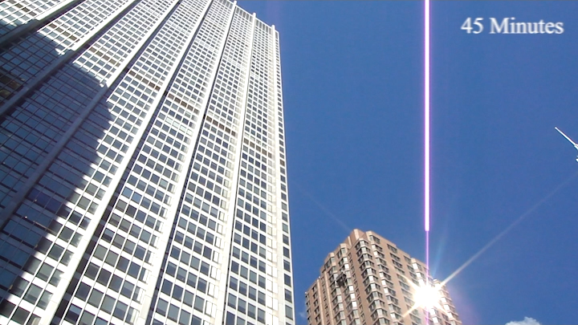
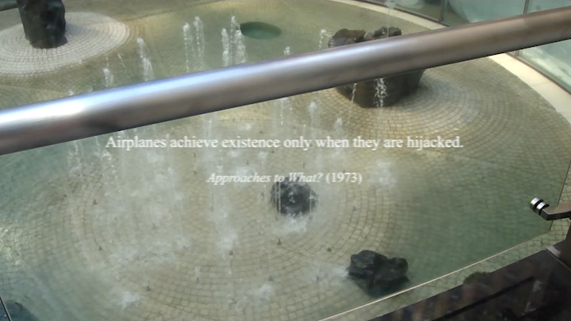
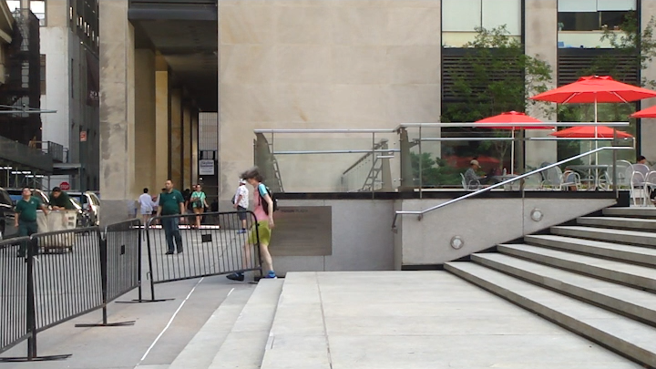
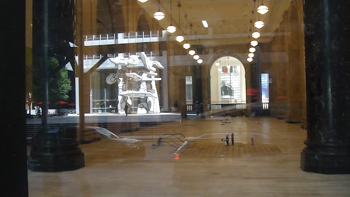
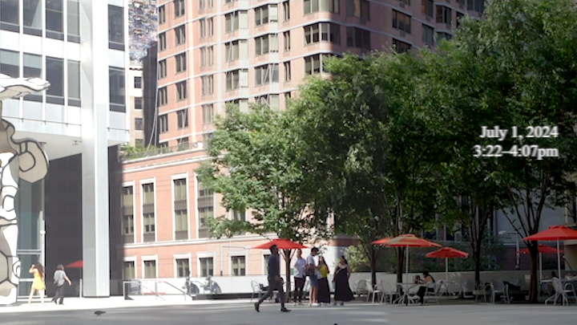

ELI HARRELL
45 Minutes
a computer ~ 2D project
Whose plaza is at 28 Liberty Street?
A study of one afternoon in July,
with select commentary from George Perec, as well as guest appearances from
Group of Four Trees (Jean Dubuffet, 1972) and
Sunken Garden (Isamu Noguchi, 1964).
→ full film
click images to jump to the scene
|

    |